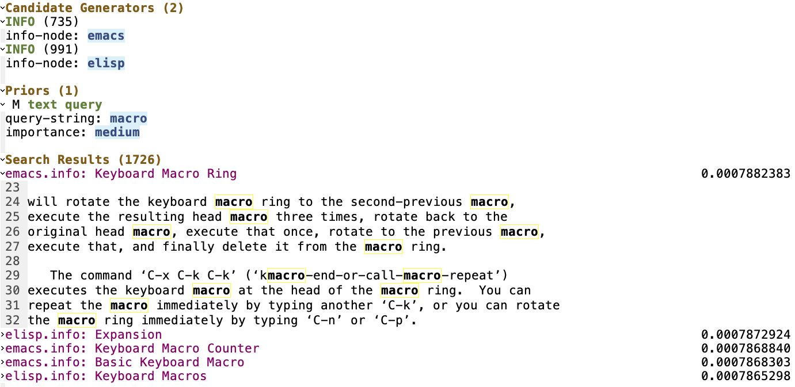
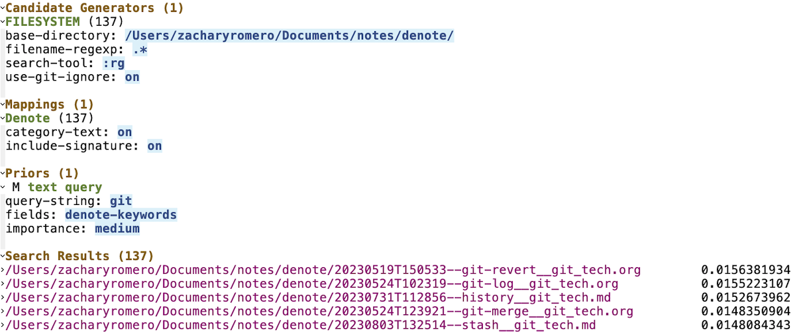

Modular components to specify candidate documents.
Express and combine a variety of
search criteria representing your prior beliefs.
Browse search results systematically, staring with those that best
matched your criteria.
The preview shows you the best matching section of the
document.

p-seach is fully customizable. Here, we're not searching files, but
rather all the Info nodes of "emacs" and "elisp".

With a little Elisp, fields for specific file formats can be
extracted.
Here we are creating a mapping to extract Denote-related
fields from our candidates.
And then proceed to search on Denote keywords.